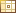

A Property component is always contained in a Property Sheet Section component, which is contained in a Property Sheet component.
To add a new Property component to a Property Sheet, you can drag the Property component  from
the Palette's Layout category to a Property Sheet Section in the Property Sheet. You can also drop the Property component on a Property Sheet Section node  in the Navigator window, or you can right-click a Property Sheet Section in either the Visual Designer or the Navigator window and choose Add Property.
in the Navigator window, or you can right-click a Property Sheet Section in either the Visual Designer or the Navigator window and choose Add Property.
A Property component is a container that has a label, optional help text, and some default formatting. You can either leave the Property component as is to display read-only data, or you can drop other components on a Property component to make it editable or selectable, or to provide a different format for the data. For example, to make a Property component editable, you could drop a Text Field component on it.
You can set the label for a Property component by editing its label property in the Property Component Properties Window.
label property of each Property component to describe its text field, such as First Name for a text field that requires that a user's first name be entered. If a Property component contains an input component like Text Field and you want to specify that the field is a required entry, set the required property of the input component. Setting the required property of the input component causes a red asterisk icon to be added to the Property component's label at runtime. If you want to display a short description of this icon at the top of the property sheet, set the requiredFields property of the Property Sheet component.
The following link shows a sample Property Sheet component with required fields: